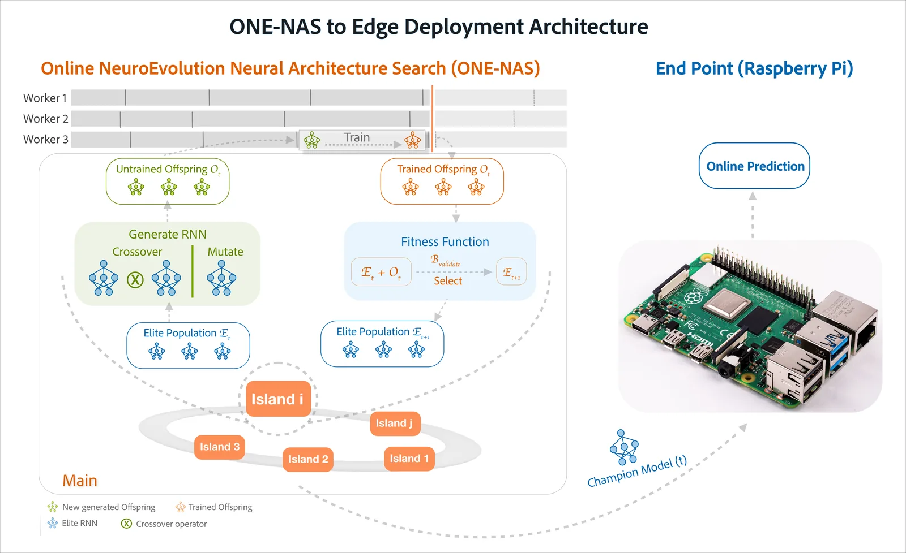
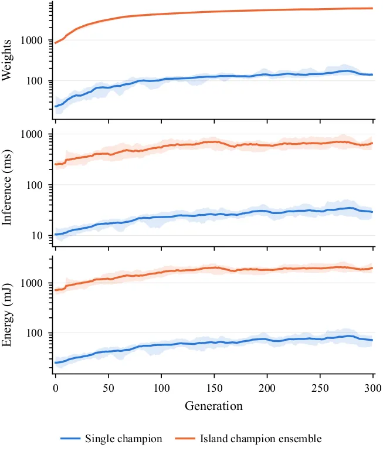
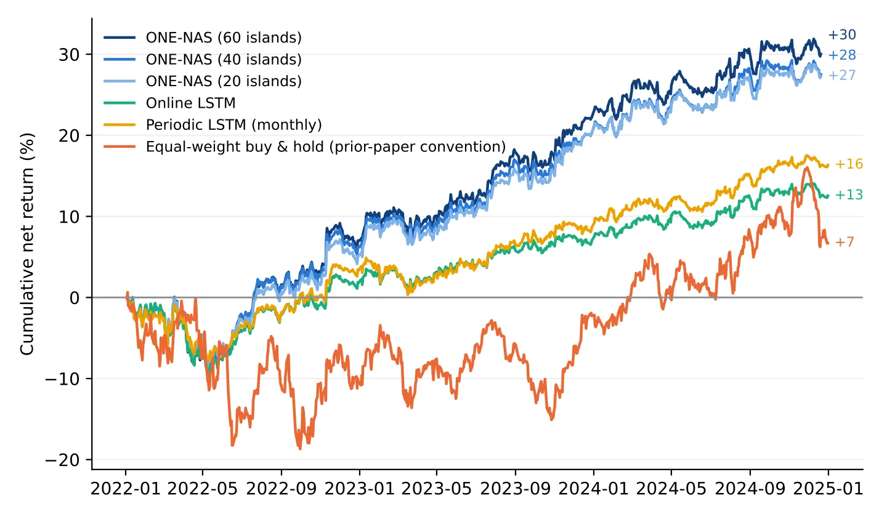
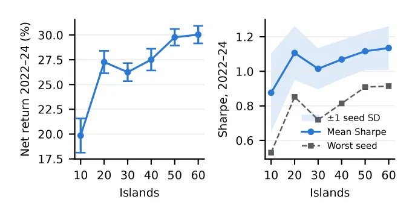

O problema: modelos grandes que envelhecem rápido
Prever retornos de ações é difícil porque a relação entre features e retornos muda com o regime de mercado. Um modelo treinado em um período frequentemente falha no seguinte. A abordagem tradicional é retreinar periodicamente — mensalmente, por exemplo — mas entre retreinos o modelo degrada conforme o mercado deriva. Modelos precisos costumam ser grandes, caros para atualizar online e fixos em arquitetura uma vez treinados: só os pesos podem se adaptar, não a topologia da rede.
Aprendizado incremental atualiza os pesos entre retreinos, mas a arquitetura permanece congelada desde o início. O paper propõe uma alternativa: busca evolutiva online de arquiteturas neurais, onde tanto arquitetura quanto pesos evoluem continuamente conforme novos dados chegam. O método se chama ONE-NAS (Online NeuroEvolution-based Neural Architecture Search) e foi aplicado aqui à previsão cross-sectional de retornos diários de ações — prever o retorno futuro de cada ação em um portfólio a cada dia de negociação.
A ideia: evolução contínua em ilhas paralelas
ONE-NAS mantém uma população de redes neurais recorrentes (RNNs) organizadas em ilhas — subpopulações que evoluem em paralelo. Cada indivíduo, chamado de genoma, é um grafo direcionado que codifica tanto uma arquitetura quanto seus pesos. Os nós ocultos são células recorrentes de uma biblioteca (GRU, LSTM, etc.) e as arestas podem ser feedforward ou recorrentes, carregando valores adiante no tempo.
A busca começa de um genoma mínimo contendo apenas conexões diretas entrada-saída. Profundidade, conectividade recorrente e composição de células são resultados da busca, não escolhas prévias. Descendentes são gerados por mutação (inserção ou remoção de nós e arestas, mudança de tipo de célula) e por crossover entre dois pais. Os pesos são herdados para componentes retidos e inicializados aleatoriamente apenas para componentes novos, então cada descendente parte de uma rede parcialmente treinada e precisa de poucas épocas de backpropagation.
As ilhas trocam material genético apenas por crossover inter-ilhas a uma taxa baixa, então se tornam cada vez mais distintas ao longo do tempo. Um número suficiente de ilhas é mantido para preservar diversidade na busca evolutiva. Ao final de cada geração, cada ilha ranqueia os genomas que possui e retém os de melhor desempenho como pais para a próxima geração. O melhor genoma de uma ilha é seu campeão; o campeão de maior fitness entre todas as ilhas é o melhor global.

Protocolo online: janelas, validação e ausência de vazamento
O fluxo de entrada é particionado em janelas consecutivas de W dias de negociação, com uma geração por janela. No início da geração t, o histórico revelado é dividido em um bloco de validação (suas V janelas mais recentes) e um pool de treinamento (todas as janelas anteriores). Cada ilha gera descendentes de suas elites e os treina em subsequências de comprimento L extraídas apenas do pool de treinamento; todos os genomas são então pontuados por erro quadrático médio no bloco de validação.
Cada ilha mantém seus genomas de melhor ranking como elites, e os genomas designados pela regra de predição preveem a janela t+1 dia a dia conforme suas features chegam. Quando a janela t+1 fecha, seus retornos realizados são anexados para formar o histórico da geração t+1, o bloco de validação desliza uma janela para frente, e a geração t+1 começa. Treinamento usa o histórico completo enquanto fitness é medido nos dados mais recentes, então a população rastreia o regime atual sem descartar regimes anteriores.
Vazamento (leakage) é prevenido por construção: uma janela é prevista antes que seus rótulos sejam revelados, entra no pool de treinamento apenas na geração seguinte, e o bloco de validação nunca sobrepõe a janela de teste. Esse protocolo garante que o modelo não veja o futuro durante o treinamento ou a seleção.
Pipeline de deployment: servidor e borda
Um algoritmo de busca neuroevolutiva online se desdobra em duas cargas de trabalho. A busca paralela e cara roda em um serviço de nuvem ou estação de trabalho (o host). A previsão, barata porque as redes evoluídas são pequenas, roda em um dispositivo de borda (o endpoint). A cada geração o host envia os genomas campeões via TCP/IP para um Raspberry Pi, que prevê conforme as features de cada dia chegam e continua prevendo a partir dos últimos genomas recebidos caso o host fique indisponível.
O Pi é um alvo restrito: inferência que atende à cadência diária lá atende em qualquer hardware que um praticante possua. O paper usa um Raspberry Pi 4B de 4 GB rodando Raspberry Pi OS de 64 bits, com NumPy e PyTorch compilados para ARM. O host roda Ubuntu 22.04 com 128 GB de RAM e duas GPUs NVIDIA RTX 3090. A busca ONE-NAS no host usa 48 workers (threads), então uma geração processa 48 genomas em paralelo.
Configuração experimental: dados e baselines
Os autores usam dados CRSP (Center for Research in Security Prices) de ações de mid-cap dos EUA. Quatro painéis V1–V4 são construídos, cada um com 50 ações selecionadas por capitalização de mercado em 2021. O span de tuning vai de 2016 a 2019 (disjunto da avaliação); o span de avaliação vai de 2022 a 2024. Cada janela tem W=20 dias de negociação, o bloco de validação tem V=10 janelas, e subsequências de treinamento têm L=60 dias.
Os baselines são: LSTM online (atualizado a cada janela com Adam), GRU online (idem), LSTM periódico (retreinado mensalmente do zero) e um autoregressivo online (AR). Todos usam a mesma regra de negociação Overlapping: a cada dia, compra as 10 ações de maior predição e vende as 10 de menor, mantendo posições até a próxima rebalanceamento. Custos de transação são medidos e descontados: 0,1% por lado (compra ou venda), então 0,2% por round-trip.
Hiperparâmetros do ONE-NAS foram selecionados no span de tuning. O número de ilhas N foi fixado em 40 para os experimentos principais, com ablações em N=20 e N=60. Cada configuração roda com 10 seeds aleatórias por painel, totalizando 40 células (painel, seed) para ONE-NAS e entre 40 e 48 células para os baselines.

Resultados: inferência no dispositivo é viável
A Figura 2 mostra tempo e energia por passagem para o campeão único e para o ensemble de 40 campeões de ilhas, medidos no Raspberry Pi 4B com um sensor INA219. Uma passagem sobre a janela de 50 ações leva 24,6 ms para o campeão único, e 88% de sua energia é o consumo ocioso da placa, então nessa escala o tempo de atividade domina o custo de computação. O ensemble roda 39× os pesos em 23× o tempo (556 ms por passagem) e é mais preciso: seu MSE de 0,975 supera o 1,031 do campeão único e a média de seus próprios membros.
Ambas as opções permanecem muito dentro de um ciclo de decisão diário em uma placa de US$ 50; a escolha entre elas é um trade-off precisão–energia, não um de viabilidade. Conforme as redes evoluídas crescem ao longo da campanha, tempo e energia crescem com elas enquanto a potência da placa permanece constante. O tamanho que a busca alcança governa ambos: controle de tamanho é também controle de energia.
Retorno líquido: ensemble supera baselines neurais
A Tabela 1 mostra retorno líquido por ano de negociação, média sobre V1–V4 e seeds. O ensemble de 40 ilhas retorna +27,5% no período 2022–2024, contra +11,3% para LSTM online, +11,7% para GRU online e +14,8% para LSTM periódico (retreinado mensalmente). A margem pareada é de +12,7 a +16,2 pontos percentuais com t > 6,5 sobre 40 células compartilhadas. O campeão único retorna apenas +4,5%, ficando atrás de todos os baselines neurais.
A Figura 3 mostra caminhos cumulativos de retorno líquido. O ensemble ONE-NAS domina os baselines em quase todo o período. Buy-and-hold igual-peso retorna +7,9%, seguindo a convenção de estudos anteriores (soma das células anuais, não pareado). O AR online retorna −3,3%, mostrando que métodos lineares simples não capturam a dinâmica cross-sectional.
Ablações de número de ilhas (N=20, 40, 60) mostram que retorno e Sharpe ratio melhoram com mais ilhas até estabilizar em 40–60. A configuração de 40 ilhas foi fixada no span de tuning. Aumentar para 60 ilhas traz +2,6 pontos de retorno (+30,1% vs. +27,5%) mas com margem não significativa (t=1,63 sobre células pareadas).

Decomposição do retorno: onde vem o ganho?
Os autores decompõem o retorno em quatro componentes: seleção de ações (stock-picking), timing de mercado, custos de transação e exposição a fatores. A seleção de ações contribui +30,4% para o ensemble ONE-NAS, contra +13,2 a +16,8% para os baselines neurais. Timing de mercado (variação no valor absoluto da carteira) é pequeno e similar entre os métodos.
Custos de transação realizados são −2,9% para o ensemble, contra −1,9 a −2,0% para os baselines. O ensemble negocia ligeiramente mais porque rebalanceia com base em previsões que mudam mais entre dias. Exposição a fatores Fama-French (mercado, tamanho, valor, momentum) é neutra: regressões dos retornos diários contra os fatores mostram alfas positivos e significativos para ONE-NAS (+9,2 bps/dia, t=3,0) e não significativos para os baselines.
O ganho do ensemble vem principalmente de melhor seleção de ações, não de timing ou de carregar fatores conhecidos. A capacidade de adaptar arquitetura e pesos online permite que o modelo capture padrões cross-sectional que mudam com o regime de mercado.
Robustez da regra de negociação e custos
Os autores testam três regras de negociação: Overlapping (rebalanceia diariamente as 10 melhores e 10 piores), Non-overlapping (rebalanceia apenas quando a janela fecha, a cada 20 dias) e Top-bottom (mantém posições até que uma ação saia do top-10 ou bottom-10). Overlapping retorna +27,5%, Non-overlapping +25,8% e Top-bottom +26,9%. A diferença não é significativa (p > 0,05), mostrando que o resultado é robusto à escolha da regra.
Sensibilidade a custos de transação: com custos variando de 0% a 0,3% por lado, o retorno do ensemble cai de +30,4% (sem custos) para +24,6% (0,3% por lado), mas permanece acima dos baselines em todos os níveis testados. Com custos de 0,2% por lado, o ensemble ainda retorna +27,5% contra +11 a +15% dos baselines.

Limitações e escopo do experimento
O experimento avalia apenas ações de mid-cap dos EUA em um período de três anos (2022–2024). Não há evidência de que os resultados se generalizem para large-caps, small-caps, mercados internacionais ou períodos mais longos. O span de avaliação inclui um mercado de baixa (2022) e recuperação (2023–2024), mas não testa crises prolongadas ou mudanças estruturais de regime.
Custos de transação são modelados como 0,1% por lado, uma estimativa razoável para mid-caps líquidas em corretoras de varejo nos EUA, mas custos reais variam com liquidez, horário de negociação e tamanho da ordem. O paper não inclui slippage (diferença entre preço esperado e executado) nem impacto de mercado de ordens grandes.
O deployment no Raspberry Pi é um piloto: não há camada de execução conectada a uma corretora, então os custos são simulados, não medidos em negociações reais. Os autores afirmam que trabalho futuro inclui adicionar uma camada de execução, medir custos realizados ao vivo e ter usuários na indústria rodarem o pipeline e darem feedback.
Orientações operacionais para o piloto
Os autores fornecem orientações para quem quiser reproduzir o piloto. O host precisa de GPUs para rodar a busca ONE-NAS em tempo razoável; duas RTX 3090 processam uma geração (48 genomas em paralelo) em cerca de 20 minutos. O Raspberry Pi 4B de 4 GB é suficiente para inferência, mas modelos maiores (N=60 ilhas) podem exigir 8 GB.
A comunicação host-endpoint via TCP/IP é assíncrona: o Pi continua prevendo com os últimos genomas recebidos caso o host fique indisponível, então falhas temporárias do host não interrompem a negociação. O código-fonte não está disponível publicamente no momento da publicação, mas os autores indicam que pretendem disponibilizá-lo.
Hiperparâmetros foram fixados no span de tuning 2016–2019. Não há garantia de que esses valores sejam ótimos para outros mercados ou períodos. Retuning pode ser necessário ao aplicar o método a novos contextos.
Por que isso importa
Este paper mostra que busca evolutiva online de arquiteturas neurais pode ser deployada em hardware de borda barato e entregar retornos superiores a baselines neurais estabelecidos. A contribuição não é apenas o retorno líquido (+27,5%), mas a demonstração de que inferência rápida (556 ms para 50 ações) e eficiente em energia é viável em um Raspberry Pi de US$ 50.
A descoberta de que o ensemble de campeões de ilhas supera amplamente o campeão único (+23 pontos percentuais) é importante para trabalhos futuros em ONE-NAS: a população inteira carrega informação útil, não apenas o melhor indivíduo. Isso sugere que diversidade evolutiva, mantida pelas ilhas, é um recurso valioso que deve ser explorado na inferência, não apenas na busca.
O pipeline host-endpoint é uma arquitetura prática para modelos que evoluem continuamente: a busca cara roda onde há recursos, a inferência leve roda onde os dados são produzidos, e a comunicação assíncrona tolera falhas temporárias. Essa separação pode ser útil além de finanças, em qualquer domínio onde modelos precisem se adaptar online a streams não-estacionários.
O que fica
- ONE-NAS evolui arquiteturas e pesos de RNNs online, sem fase de pré-treinamento. Um ensemble de 40 campeões de ilhas retorna +27,5% líquido em ações mid-cap 2022–2024, contra +11 a +15% de baselines LSTM.
- Inferência no Raspberry Pi 4B processa 50 ações em 556 ms (ensemble) ou 24,6 ms (campeão único), muito abaixo do ciclo diário. Custo de energia cresce com o tamanho das redes evoluídas, não com a potência da placa.
- O ensemble de campeões de ilhas supera o campeão único em +23 pontos percentuais (t=18,2). Diversidade evolutiva entre ilhas é um recurso valioso que deve ser explorado na inferência, não apenas na busca.
- Experimento limitado a mid-caps dos EUA, 2022–2024, custos simulados. Não testa large-caps, mercados internacionais, períodos longos ou execução real. Deployment é um piloto, não um sistema de produção completo.
Paper original: Evolve on the Host, Predict on the Edge: Deploying Online Neuroevolutionary Architecture Search for Cross-sectional Stock Return Prediction
Comentários
Nenhum comentário ainda. Seja o primeiro.